Wielkie Arkana
Odkryj tajemnice najważniejszych kart tarotowych
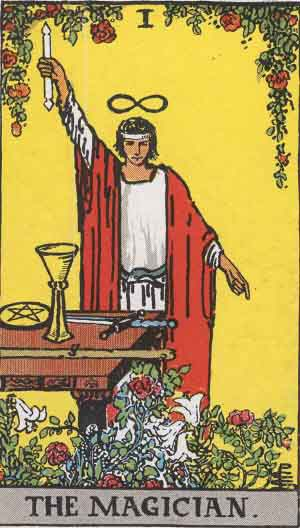
1. The Magician
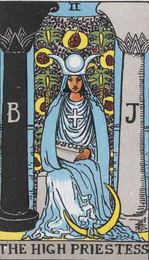
2. The High Priestess
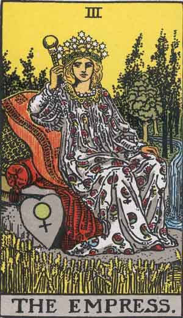
3. The Empress

4. The Emperor
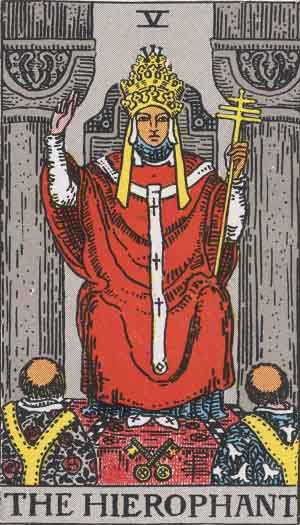
5. The Hierophant

6. The Lovers

7. The Chariot

8. Strength
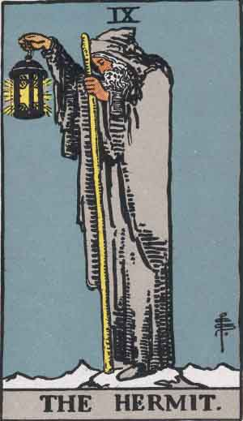
9. The Hermit
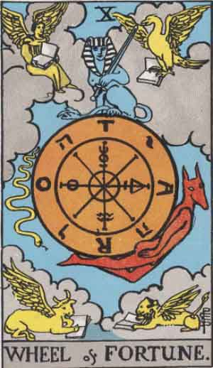
10. Wheel of Fortune

11. Justice
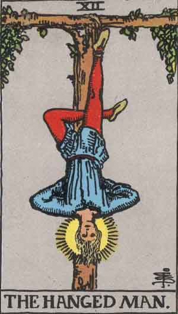
12. The Hanged Man

13. Death
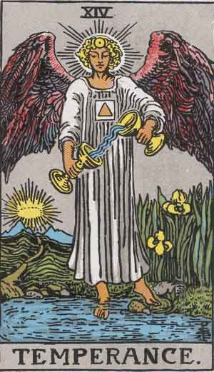
14. Temperance

15. The Devil
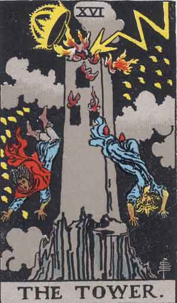
16. The Tower
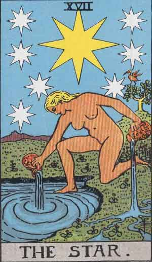
17. The Star

18. The Moon
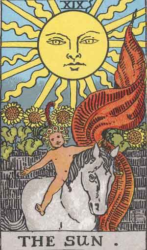
19. The Sun
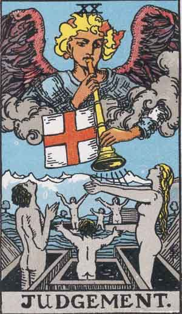
20. Judgement